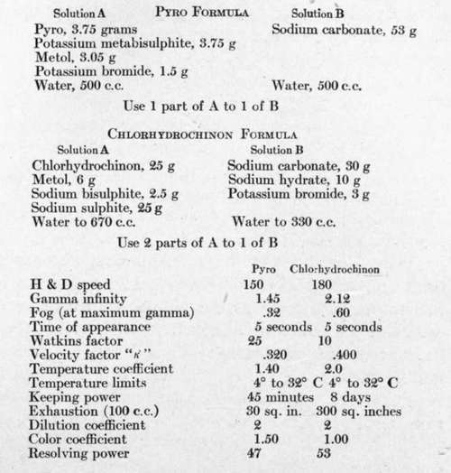

Practical Developers For Aerial Negatives
Description
This section is from the book "Airplane Photography", by Herbert E. Ives. Also available from Amazon: Airplane photography.
Practical Developers For Aerial Negatives
In the English service a pyro metol developer was generally used, producing stained negatives. The French, American and Italian practice was to use metol-hydrochinon, without staining. A special chlor-hydrochinon developer, worked out by the Eastman Research Laboratory for the United States Air Service, has probably the greatest merit of any yet tried. A comparison, given below, between it and a pyro metol formula used on a representative plate, illustrates the use of the various bases of study given above.
Owing to the difficulty of securing pure chlorhydrochinon a metol hydrochinon of very similar properties has been worked out. Its composition is:
Metol | 16 grams |
Hydrochinon | 16 " |
Sodium sulphite | 60 " |
Sodium hydroxide | 10 " |
Potassium bromide | 10 " |
Water to | 1 litre |
To keep the ingredients in solution in cold weather, 50 c.c. of alcohol should be included in every litre of solution. All things considered this is probably the most practical and satisfactory developer for aerial negatives.
Developers For Papers
The following formula has been found very satisfactory for papers:
Metol .9 gram.
Hydrochinon 3.6 "
Sodium carbonate 20.0 "
Sodium sulphite 14.0 "
Potassium bromide .5 to 1.0 "
Water to 1 litre.
Fixing Baths
For plates the following fixing and hardening bath is recommended:
Sodium thiosulphate (hypo) 350 grams.
Potassium chrome alum 6 "
Sodium bisulphite 10 11
Water to 1000 c.c.
During hot weather, the above quantities of chrome alum and bisulphite are doubled. For papers the following:
Hypo, 35 per cent. 100 volumes Acid hardener 5 "
The acid hardener is constituted as follows:
Alum 50 grams.
Acid acetic 28° 400 c.c.
Sodium sulphite 100 grams Water to 1 litre.
Intensification And Reduction
These processes have been little employed in air work. Reduction is rarely necessary, for obvious reasons. Intensification would often be of value, but the common practice, which saves some time, is to use printing paper of strong contrast for those negatives which are deficient in density and contrast. When intensification is desirable or permissible, either the ordinary mercury or uranium intensifier may be used.
Water
In the field it is found necessary in many cases to purify the water that is to be used in mixing up chemicals.
Water may contain suspended matter or dirt, dissolved salts, and slime. It is important to remove the suspended matter, as it may cause spots on the plates and papers, while any slime would coagulate, forming a sludge in the developer which would also tend to settle on the plates and cause marks during development. The dissolved salts may or may not cause trouble. Two methods of purification are possible:
(a) Filter the water through a cloth into a barrel, add about one gram of alum for every four litres of water, and allow to settle over night. Draw off the clear liquid from a plug in the side as required.
(b) Boil the water and allow it to cool over night. If the water contains dissolved lime, boiling will often cause this to come out of solution.
Continue to:
- prev: Characteristics Of Developers For Plates And Films
- Table of Contents
- next: V. Methods Of Handling Plates, Films And Papers. Chapter XXIII. The Developing And Drying Of Plates And Films. Field Requirements
Tags
camera, lens, airplane, aerial, film, exposure, photography, maps, birdseye